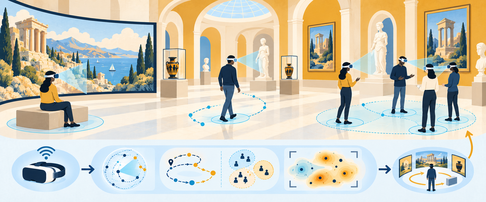
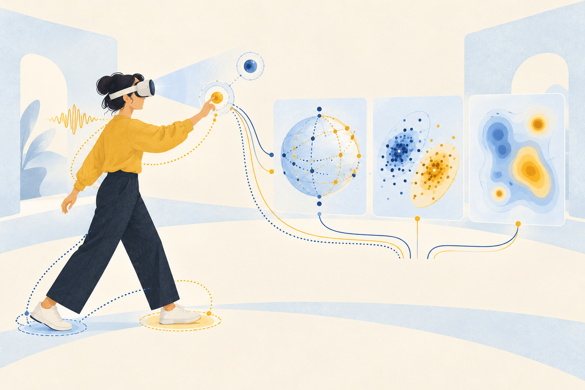
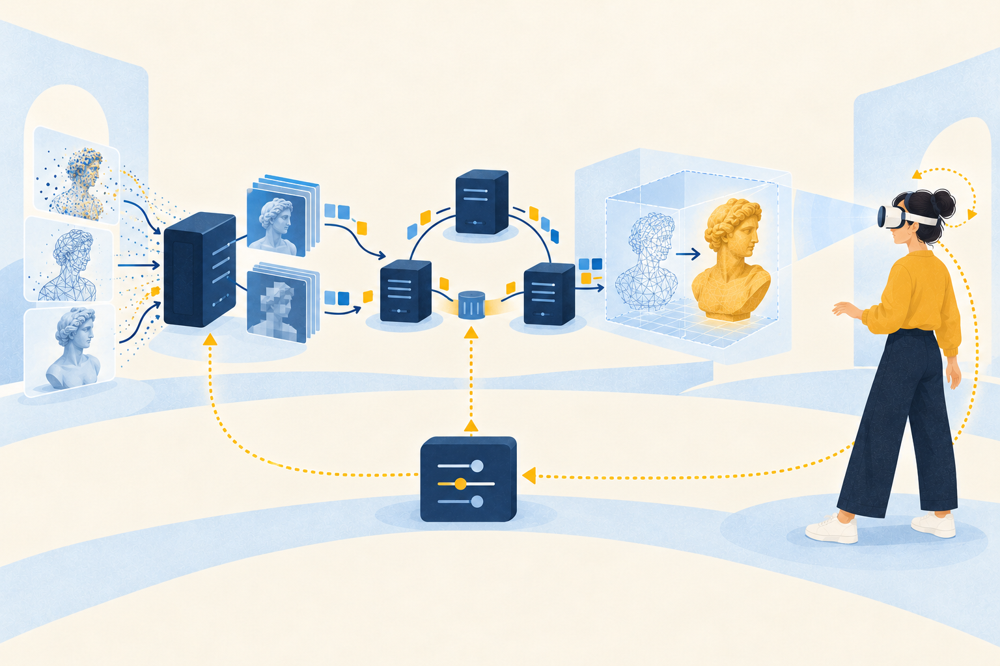
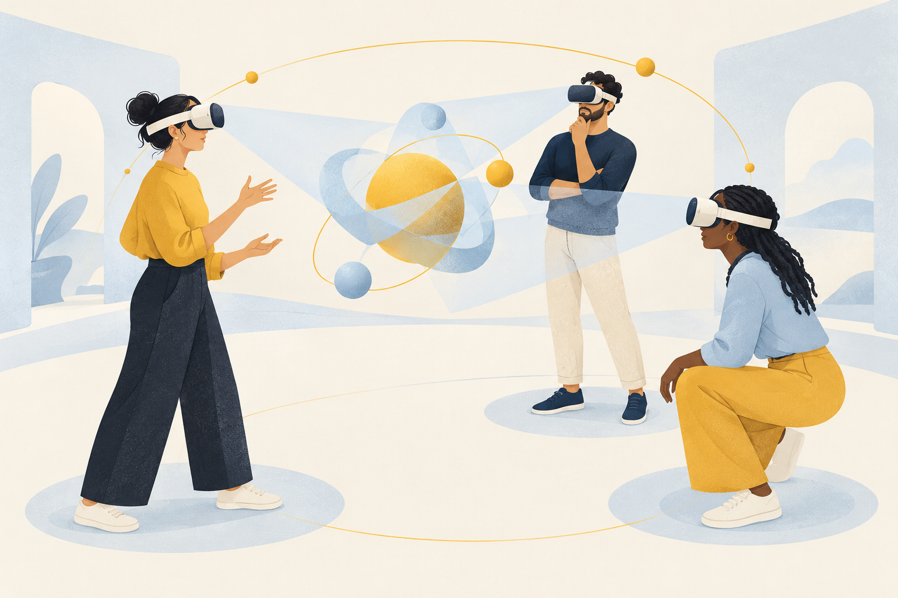

Research
My research explores how people navigate, experience and interact in immersive environments, and how this understanding can inform adaptive streaming and collaborative XR systems.


Behavioural Metrics for Interactive Systems
What can behaviour tell a system?
Movement, gaze, voice and decision timing trace how people experience an immersive system. I turn these signals into validated behavioural metrics, using information theory, clustering and machine learning, that systems and designers can act on.
Selected publications
- S. Rossi, I. Viola, L. Toni, P. Cesar. A Clustering Approach to Unveil User Similarities in 6-DoF Extended Reality Applications. ACM TOMM 2024. DOI
- S. Rossi, I. Viola, L. Toni, P. Cesar. Extending 3-DoF Metrics to Model User Behaviour Similarity in 6-DoF Immersive Applications. ACM MMSys 2023. DOI
- S. Rossi, L. Toni. Understanding User Navigation in Immersive Experience: An Information-Theoretic Analysis. ACM MMVE 2020. DOI

Adaptive Immersive Streaming
What if the user were at the heart of the streaming chain, not at the end of it?
Immersive systems must scale, adapt to each user, and stay within bandwidth and latency budgets. My work puts the interactive user at the heart of the coding, streaming and rendering chain.
Selected publications
- S. Rossi, C. Ozcinar, A. Smolic, L. Toni. Do Users Behave Similarly in VR? Investigation of the User Influence on the System Design. ACM TOMM 2020. DOI Nicholas Georganas ACM TOMM Best Paper Award (2021)
- S. Rossi, A. Guedes, L. Toni. Streaming and User Behavior in Omnidirectional Videos. In Immersive Video Technologies, Academic Press (Elsevier), 2023. DOI
- J. Jansen, T. Röggla, S. Rossi, I. Viola, P. Cesar. Open-Sourcing VR2Gather: A Collaborative Social VR System for Adaptive Multi-Party Real Time Communication. ACM MM 2024. DOI
Current Projects
EU Horizon
INDUX-R
Transforming European industrial ecosystems through eXtended Reality enhanced with human-centric AI and secure, 5G-enabled IoT.
indux-r.eu →Past Projects
Conceptual illustrations on this page were created with OpenAI's image generation tool, with direction by Silvia Rossi.

Social Behaviour in Shared Virtual Spaces
How do people coordinate when they share a virtual space?
When people share a virtual space, they still have to settle where to look, how close to stand and who speaks next. I study how shared attention, interpersonal distance, turn-taking and collective decisions emerge in social XR.
Selected publications
- S. Rossi, I. Viola, J. Jansen, S. Subramanyam, L. Toni, P. Cesar. Influence of Narrative Elements on User Behaviour in Photorealistic Social VR. ACM MMVE 2021. DOI
- S. van Damme, J. Jansen, S. Rossi, P. Cesar. From Individual QoE to Shared Mental Models: A Novel Evaluation Paradigm for Collaborative XR. QoMEX 2025. DOI Best Paper Award
- J. Williamson, S. Rossi, et al. Social Density and its Impact on Behaviour in Virtual Environments. ACM IXR '25. DOI
Explore this research →